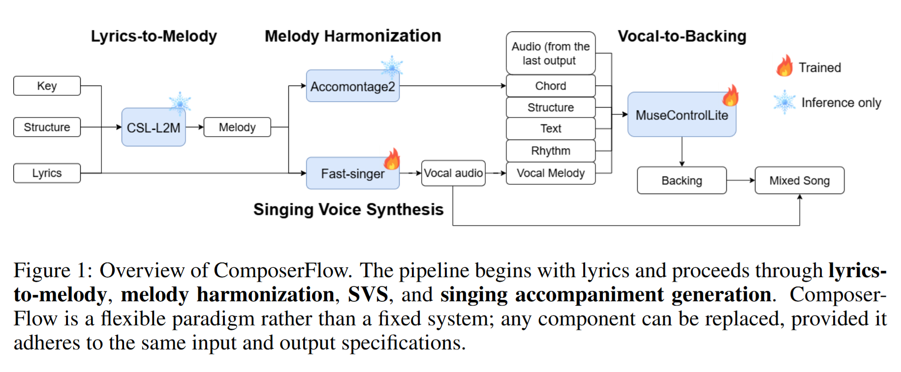

Open-source end-to-end song generators have emerged in the wake of commercial systems like Suno, offering one-shot music with lyrics but at the cost of large datasets and substantial compute. We propose ComposerFlow, a hierarchical pipeline that composes songs by chaining four specialized components—lyrics-to-melody, melody harmonization, singing-voice synthesis (SVS), and vocal-to-backing generation. This modular design is resource-efficient (single RTX 3090; ~6k hours of data) and editable: users can revise intermediate results (e.g., melody, chords, vocal) and deterministically regenerate all downstream audio. Leveraging SVS further mitigates common end-to-end issues such as unstable vocal timbre and phoneme errors. We evaluate our pipeline against representative end-to-end baselines and find comparable perceptual quality despite significantly lower training demands. We release audio demos at https://composerflow.github.io/web/. Our results suggest that modular, controllable pipelines are a practical alternative to monolithic song models, enabling rapid iteration and reliable production on accessible hardware.

| # | Global Style Prompt | Lyrics | ComposerFlow | Acestep | DiffRhythm | Levo | Suno |
|---|---|---|---|---|---|---|---|
| 1 |
A trip-hop inspired track with moody beats, dark synths. The atmosphere is mysterious and hypnotic, like time slipping away like sand.
|
[Verse]
時間在掌心緩緩流動
shí jiān zài zhǎng xīn huǎn huǎn liú dòng
沙粒劃過無聲的夢境
shā lì huà guò wú shēng de mèng jìng
黑夜中隱藏不安心跳
hēi yè zhōng yǐn cáng bù ān xīn tiào
記憶碎片如影追隨
jì yì suì piàn rú yǐng zhuī suí
無法阻止流沙的墜落
wú fǎ zǔ zhǐ liú shā de zhuì luò
靈魂在夜色中漂泊
líng hún zài yè sè zhōng piāo bó
[Chorus]
流沙時刻悄然滑落
liú shā shí kè qiāo rán huá luò
夢境崩塌無法捕捉
mèng jìng bēng tā wú fǎ bǔ zhuō
心靈迷失在黑暗之中
xīn líng mí shī zài hēi àn zhī zhōng
時間無聲將我吞沒
shí jiān wú shēng jiāng wǒ tūn mò
[Outro]
流沙低語仍在回蕩
liú shā dī yǔ réng zài huí dàng
夜色掩埋未盡的夢
yè sè yǎn mái wèi jìn de mèng
|
|||||
| 2 |
A meditative ambient piece with temple bells, wooden percussion, low drones. The sound is spiritual and calming, like a ritual at dawn in an ancient temple.
|
[Verse]
暮鼓聲聲震動山谷
mù gǔ shēng shēng zhèn dòng shān gǔ
晨鐘悠悠喚醒大地
chén zhōng yōu yōu huàn xǐng dà dì
心念隨聲逐漸安定
xīn niàn suí shēng zhú jiàn ān dìng
靈魂浸入無邊靜謐
líng hún jìn rù wú biān jìng mì
木魚聲響伴隨微風
mù yú shēng xiǎng bàn suí wēi fēng
回音延展穿越古今
huí yīn yán zhǎn chuān yuè gǔ jīn
[Chorus]
暮鼓晨鐘迴盪心房
mù gǔ chén zhōng huí dàng xīn fáng
時光停駐無聲流淌
shí guāng tíng zhù wú shēng liú tǎng
靜思深處燃起光芒
jìng sī shēn chù rán qǐ guāng máng
信念永遠不會消亡
xìn niàn yǒng yuǎn bú huì xiāo wáng
[Outro]
鐘聲漸遠仍在心中
zhōng shēng jiàn yuǎn réng zài xīn zhōng
靜謐回響永恆守候
jìng mì huí xiǎng yǒng héng shǒu hòu
|
|||||
| 3 |
A slow Chinese folk-inspired ballad with guqin, erhu. The mood is nostalgic and poetic, like watching a lone boat disappear on a river.
|
[Verse]
江水悠悠托起孤舟
jiāng shuǐ yōu yōu tuō qǐ gū zhōu
白霧籠罩故鄉的岸
bái wù lóng zhào gù xiāng de àn
遠山輪廓映照殘陽
yuǎn shān lún kuò yìng zhào cán yáng
離歌迴盪隨風遠揚
lí gē huí dàng suí fēng yuǎn yáng
一聲輕嘆落入江心
yì shēng qīng tàn luò rù jiāng xīn
留下思念無人能懂
liú xià sī niàn wú rén néng dǒng
[Chorus]
孤舟遠影消失天際
gū zhōu yuǎn yǐng xiāo shī tiān jì
夢回依舊在心底
mèng huí yī jiù zài xīn dǐ
歲月沉默不語無聲
suì yuè chén mò bù yǔ wú shēng
思念化作河流長行
sī niàn huà zuò hé liú cháng xíng
[Outro]
江面留下ㄧ抹殘影
jiāng miàn liú xià yì mǒ cán yǐng
心事隨波永遠漂流
xīn shì suí bō yǒng yuǎn piāo liú
|
|||||
| 4 |
A synthwave track with retro analog synths, electronic drums. The sound is nostalgic and mysterious, like getting lost in neon-lit streets at night.
|
[Verse]
夜色映照無盡的街
yè sè yìng zhào wú jìn de jiē
霓虹閃爍掩蓋心事
ní hóng shǎn shuò yǎn gài xīn shì
腳步迷失在夢的邊界
jiǎo bù mí shī zài mèng de biān jiè
風聲低語引領前行
fēng shēng dī yǔ yǐn lǐng qián xíng
孤單隱沒在閃光深處
gū dān yǐn mò zài shǎn guāng shēn chù
靈魂尋找出口的燈火
líng hún xún zhǎo chū kǒu de dēng huǒ
[Chorus]
夜色迷途無盡延續
yè sè mí tú wú jìn yán xù
心跳隨節奏不停追尋
xīn tiào suí jié zòu bù tíng zhuī xún
夢境帶我穿越黑暗
mèng jìng dài wǒ chuān yuè hēi àn
希望在遠方閃閃發亮
xī wàng zài yuǎn fāng shǎn shǎn fā liàng
[Outro]
霓虹逐漸沉入寂靜
ní hóng zhú jiàn chén rù jì jìng
心靈找到歸屬方向
xīn líng zhǎo dào guī shǔ fāng xiàng
|
|||||
| 5 |
An uplifting pop ballad with piano, strings. The mood is hopeful and inspiring, like walking down a sunlit road at dawn.
|
[Verse]
晨曦灑落喚醒的時光
chén xī sǎ luò huàn xǐng de shí guāng
腳步輕快迎向未來
jiǎo bù qīng kuài yíng xiàng wèi lái
心靈閃耀不滅的希望
xīn líng shǎn yào bù miè de xī wàng
每一瞬間都充滿力量
měi yí shùn jiān dōu chōng mǎn lì liàng
微風低語陪伴著夢想
wēi fēng dī yǔ péi bàn zhe mèng xiǎng
勇氣綻放在光芒之中
yǒng qì zhàn fàng zài guāng máng zhī zhōng
[Chorus]
晨曦之路引領方向
chén xī zhī lù yǐn lǐng fāng xiàng
心靈飛翔不再迷惘
xīn líng fēi xiáng bù zài mí wǎng
愛的歌聲迴盪天際
ài de gē shēng huí dàng tiān jì
未來就在光芒前方
wèi lái jiù zài guāng máng qián fāng
[Outro]
晨曦依舊照耀旅程
chén xī yī jiù zhào yào lǚ chéng
心靈堅定走向遠方
xīn líng jiān dìng zǒu xiàng yuǎn fāng
|
|||||
| 6 |
A dramatic ballad with piano, cello. The mood is sorrowful and reflective, like a nocturne echoing in an empty city.
|
[Verse]
孤城靜夜無聲的呼吸
gū chéng jìng yè wú shēng de hū xī
燈火映照破碎的夢
dēng huǒ yìng zhào pò suì de mèng
心靈低吟歲月滄桑
xīn líng dī yín suì yuè cāng sāng
腳步停留在舊時街
jiǎo bù tíng liú zài jiù shí jiē
夜色承載無盡思念
yè sè chéng zǎi wú jìn sī niàn
愛意悄然融入寂寞
ài yì qiāo rán róng rù jì mò
[Chorus]
孤城夜曲回響心底
gū chéng yè qǔ huí xiǎng xīn dǐ
夢想消散無人知曉
mèng xiǎng xiāo sàn wú rén zhī xiǎo
愛的旋律依舊悠揚
ài de xuán lǜ yī jiù yōu yáng
希望隱藏夜色深處
xī wàng yǐn cáng yè sè shēn chù
[Outro]
夜曲依舊低聲吟唱
yè qǔ yī jiù dī shēng yín chàng
孤城安眠在回聲裡
gū chéng ān mián zài huí shēng lǐ
|
|||||
| 7 |
A breezy pop song with electric guitar, synths. The mood is light and adventurous, like sailing away on a summer day.
|
[Verse]
夏日微風吹散雲彩
xià rì wēi fēng chuī sàn yún cǎi
海浪拍擊湧起節奏
hǎi làng pāi jī yǒng qǐ jié zòu
船帆張開奔向遠方
chuán fān zhāng kāi bēn xiàng yuǎn fāng
夢想揚起閃亮微笑
mèng xiǎng yáng qǐ shǎn liàng wēi xiào
愛意在陽光下綻放
ài yì zài yáng guāng xià zhàn fàng
希望在浪潮中飛翔
xī wàng zài làng cháo zhōng fēi xiáng
[Chorus]
夏日遠航無盡方向
xià rì yuǎn háng wú jìn fāng xiàng
夢想高歌隨風飄蕩
mèng xiǎng gāo gē suí fēng piāo dàng
愛的旋律自由閃亮
ài de xuán lǜ zì yóu shǎn liàng
未來等待新的航程
wèi lái děng dài xīn de háng chéng
[Outro]
遠航依舊映照海洋
yuǎn háng yī jiù yìng zhào hǎi yáng
光影延續無限希望
guāng yǐng yán xù wú xiàn xī wàng
|
| Lyrics (shared) |
Text A
|
Text B
|
Text C
|
|---|---|---|---|
|
[Verse]
你的過去 我不曾參與
nǐ de guò qù wǒ bù céng cān yù
你的未來 我奉陪到底
nǐ de wèi lái wǒ fèng péi dào dǐ
戀愛這種事 和你一起 才有意思
liàn ài zhè zhǒng shì hé nǐ yī qǐ cái yǒu yì si
你卻說 你想要靜靜
nǐ què shuō nǐ xiǎng yào jìng jìng
車速再快 也快不到人生的難題
chē sù zài kuài yě kuài bù dào rén shēng de nán tí
已經看不見你 的車尾燈
yǐ jīng kàn bù jiàn nǐ de chē wěi dēng
我獨自被留在台七乙
wǒ dú zì bèi liú zài tái qī yǐ
[Chorus]
你是我永遠過不去的彎
nǐ shì wǒ yǒng yuǎn guò bù qù de wān
如何卡普 也只會自摔
rú hé kǎ pǔ yě zhǐ huì zì shuāi
我們的愛 少了一半
wǒ men de ài shǎo le yí bàn
過期誓言 像優惠券 已經無法兌換
guò qí shì yán xiàng yōu huì quàn yǐ jīng wú fǎ duì huàn
你是我永遠過不去的彎
nǐ shì wǒ yǒng yuǎn guò bù qù de wān
我的無奈 被你向外拍
wǒ de wú nài bèi nǐ xiàng wài pāi
超貸的愛 要怎麼孩
chāo dài de ài yào zěn me hái
[Outro]
莫忘初衷
mò wàng chū zhōng
是最後的依賴
shì zuì hòu de yī lài
|
Chord I
0.000 0.531 N
0.531 1.062 N
1.062 1.593 Bb
1.593 2.124 Bb
2.124 2.655 A:min
2.655 3.186 A:min
3.186 3.717 G:min
3.717 4.248 G:min
4.248 4.779 G:min
4.779 5.310 G:min
5.310 5.841 D:min
5.841 6.372 D:min
6.372 6.903 C
6.903 7.434 C
7.434 7.965 C
7.965 8.496 C
8.496 9.027 N
9.027 9.558 N
9.558 10.088 Bb
10.088 10.619 Bb
10.619 11.150 A:min
11.150 11.681 A:min
11.681 12.212 G:min
12.212 12.743 G:min
12.743 13.274 G:min
13.274 13.805 G:min
13.805 14.336 D:min
14.336 14.867 D:min
14.867 15.398 N
15.398 15.929 N
15.929 16.460 Bb
16.460 16.991 Bb
16.991 17.522 A:min
17.522 18.053 A:min
18.053 18.584 G:min
18.584 19.115 G:min
19.115 19.646 G:min
19.646 20.177 G:min
20.177 20.708 C
20.708 21.239 C
21.239 21.770 C
21.770 22.301 C
22.301 22.832 Bb
22.832 23.363 Bb
23.363 23.894 A:min
23.894 24.425 A:min
24.425 24.956 G:min
24.956 25.487 G:min
25.487 26.018 C:7
26.018 26.549 C:7
26.549 27.080 Bb:min7
27.080 27.611 Bb:min7
27.611 28.142 A:min
28.142 28.673 A:min
28.673 29.204 G:min
29.204 29.734 G:min
29.734 30.265 C
30.265 30.796 C
30.796 31.327 N
31.327 31.858 N
31.858 32.389 D:min
32.389 32.920 D:min
32.920 33.451 D:min
33.451 33.982 D:min
33.982 34.513 C
34.513 35.044 C
35.044 35.575 C
35.575 36.106 C
36.106 36.637 Bb
36.637 37.168 Bb
37.168 37.699 B
37.699 38.230 B
38.230 38.761 C
38.761 39.292 C
39.292 39.823 C
39.823 40.354 C
40.354 40.885 D:min
40.885 41.416 D:min
41.416 41.947 D:min
41.947 42.478 D:min
42.478 43.009 D:min
43.009 43.540 D:min
43.540 44.071 D:min
44.071 44.602 D:min
44.602 45.133 A:min7
45.133 45.664 A:min7
45.664 46.195 A:min7
46.195 46.726 A:min7
46.726 47.257 A:min7
47.257 47.788 A:min7
47.788 48.319 E:sus4
48.319 48.850 E:sus4
48.850 49.380 E:min
49.380 49.911 E:min
49.911 50.442 E:min
50.442 50.973 E:min
50.973 51.504 D
51.504 52.035 D
52.035 52.566 D
52.566 53.097 D
53.097 53.628 C
53.628 54.159 C
54.159 54.690 C:min7
54.690 55.221 C:min7
55.221 55.752 D:min
55.752 56.283 D:min
56.283 56.814 D:min
56.814 57.345 D:min
57.345 57.876 D:min
57.876 58.407 D:min
58.407 58.938 D:min
58.938 59.469 D:min
59.469 60.000 D:min
60.000 60.531 D:min
60.531 61.062 C
61.062 61.593 C
61.593 62.124 Bb
62.124 62.655 Bb
62.655 63.186 A:min7
63.186 63.717 A:min7
63.717 64.248 G:min7
64.248 64.779 G:min7
64.779 65.310 A:min7
65.310 65.841 A:min7
65.841 66.372 D:min
66.372 66.903 D:min
66.903 67.434 D:min
67.434 67.965 D:min
67.965 68.496 C
68.496 69.026 C
69.026 69.557 C
69.557 70.088 C
70.088 70.619 Bb
70.619 71.150 Bb
71.150 71.681 Bb
71.681 72.212 Bb
72.212 72.743 A:min
72.743 73.274 A:min
73.274 73.805 A:min
73.805 74.336 A:min
74.336 74.867 G:min7
74.867 75.398 G:min7
75.398 75.929 G:min7
75.929 76.460 G:min7
76.460 76.991 A:min
76.991 77.522 A:min
77.522 78.053 A:min
78.053 78.584 A:min
78.584 79.115 D:min
79.115 79.646 D:min
79.646 80.177 D:min
80.177 80.708 D:min
80.708 81.239 A:min
81.239 81.770 A:min
81.770 82.301 D:min
82.301 82.832 D:min
82.832 83.363 B:dim
83.363 83.894 B:dim
83.894 84.425 B:dim
84.425 84.956 B:dim
84.956 85.487 A
85.487 86.018 A
86.018 86.549 A
86.549 87.080 A
87.080 87.611 N
|
Chord I
|
Chord I
|
|
Chord II
0.000 0.531 D:min7
0.531 1.062 D:min7
1.062 1.593 A:min
1.593 2.124 A:min
2.124 2.655 Bb
2.655 3.186 Bb
3.186 3.717 Bb
3.717 4.248 Bb
4.248 4.779 D:min7
4.779 5.310 D:min7
5.310 5.841 D:min7
5.841 6.372 D:min7
6.372 6.903 D:min7
6.903 7.434 D:min7
7.434 7.965 A:min
7.965 8.496 A:min
8.496 9.027 N
9.027 9.558 N
9.558 10.088 D:min7
10.088 10.619 D:min7
10.619 11.150 A:min
11.150 11.681 A:min
11.681 12.212 Bb
12.212 12.743 Bb
12.743 13.274 Bb
13.274 13.805 Bb
13.805 14.336 D:min7
14.336 14.867 D:min7
14.867 15.398 D:min7
15.398 15.929 D:min7
15.929 16.460 D:min7
16.460 16.991 D:min7
16.991 17.522 A:min
17.522 18.053 A:min
18.053 18.584 Bb
18.584 19.115 Bb
19.115 19.646 Bb
19.646 20.177 Bb
20.177 20.708 C:7
20.708 21.239 C:7
21.239 21.770 C:7
21.770 22.301 C:7
22.301 22.832 Bb
22.832 23.363 Bb
23.363 23.894 A:min
23.894 24.425 A:min
24.425 24.956 G:min7
24.956 25.487 G:min7
25.487 26.018 C:min7
26.018 26.549 C:min7
26.549 27.080 D:min
27.080 27.611 D:min
27.611 28.142 A:min
28.142 28.673 A:min
28.673 29.204 G:min7
29.204 29.734 G:min7
29.734 30.265 C:min
30.265 30.796 C:min
30.796 31.327 N
31.327 31.858 N
31.858 32.389 D:min
32.389 32.920 D:min
32.920 33.451 D:min
33.451 33.982 D:min
33.982 34.513 C
34.513 35.044 C
35.044 35.575 C
35.575 36.106 C
36.106 36.637 Bb
36.637 37.168 Bb
37.168 37.699 B:min
37.699 38.230 B:min
38.230 38.761 C
38.761 39.292 C
39.292 39.823 C:7
39.823 40.354 C:7
40.354 40.885 D:min
40.885 41.416 D:min
41.416 41.947 C:min
41.947 42.478 C:min
42.478 43.009 Bb:min
43.009 43.540 Bb:min
43.540 44.071 Bb:min
44.071 44.602 Bb:min
44.602 45.133 A:min
45.133 45.664 A:min
45.664 46.195 A:min
46.195 46.726 A:min
46.726 47.257 A:min7
47.257 47.788 A:min7
47.788 48.319 B:sus4
48.319 48.850 B:sus4
48.850 49.380 E:min7
49.380 49.911 E:min7
49.911 50.442 E:min7
50.442 50.973 E:min7
50.973 51.504 B:min7
51.504 52.035 B:min7
52.035 52.566 B:min7
52.566 53.097 B:min7
53.097 53.628 A:min
53.628 54.159 A:min
54.159 54.690 C:min7
54.690 55.221 C:min7
55.221 55.752 D:min
55.752 56.283 D:min
56.283 56.814 D:min
56.814 57.345 Bb:dim/C#
57.345 57.876 Bb
57.876 58.407 Bb
58.407 58.938 Bb:min7
58.938 59.469 Bb:min7
59.469 60.000 A:min
60.000 60.531 A:min
60.531 61.062 C:min
61.062 61.593 C:min
61.593 62.124 A:min
62.124 62.655 A:min
62.655 63.186 A:min7
63.186 63.717 A:min7
63.717 64.248 D:min7
64.248 64.779 D:min7
64.779 65.310 A:min7
65.310 65.841 A:min7
65.841 66.372 D:min
66.372 66.903 D:min
66.903 67.434 D:min7
67.434 67.965 D:min7
67.965 68.496 C:7
68.496 69.026 C:7
69.026 69.557 C:min
69.557 70.088 C
70.088 70.619 Bb:min7
70.619 71.150 Bb:min7
71.150 71.681 G:min7
71.681 72.212 G:min7
72.212 72.743 A:min
72.743 73.274 A:min
73.274 73.805 A:min
73.805 74.336 A:min
74.336 74.867 G:dim/Bb
74.867 75.398 G:dim/Bb
75.398 75.929 C#:aug/Bb
75.929 76.460 C#:aug/Bb
76.460 76.991 A:min
76.991 77.522 A:min
77.522 78.053 A:min7
78.053 78.584 A:min7
78.584 79.115 D:min
79.115 79.646 D:min
79.646 80.177 D:min
80.177 80.708 D:min
80.708 81.239 A:min7
81.239 81.770 A:min7
81.770 82.301 D:min
82.301 82.832 D:min
82.832 83.363 B:dim
83.363 83.894 B:dim
83.894 84.425 B:dim7
84.425 84.956 B:dim7
84.956 85.487 A:7
85.487 86.018 A:7
86.018 86.549 A:7
86.549 87.080 A:7
|
Chord II
|
Chord II
|
|
|
Chord III
0.000 0.531 N
0.531 1.062 N
1.062 1.593 D:min7
1.593 2.124 D:min7
2.124 2.655 D:min7
2.655 3.186 D:min7
3.186 3.717 A:min7
3.717 4.248 A:min7
4.248 4.779 A:min7
4.779 5.310 A:min7
5.310 5.841 F:min
5.841 6.372 F:min
6.372 6.903 F:min
6.903 7.434 F:min
7.434 7.965 F:min
7.965 8.496 F:min
8.496 9.027 F:min
9.027 9.558 F:min
9.558 10.088 D:min7
10.088 10.619 D:min7
10.619 11.150 D:min7
11.150 11.681 D:min7
11.681 12.212 A:min7
12.212 12.743 A:min7
12.743 13.274 A:min7
13.274 13.805 A:min7
13.805 14.336 F:min
14.336 14.867 F:min
14.867 15.398 F:min
15.398 15.929 F:min
15.929 16.460 F:min
16.460 16.991 F:min
16.991 17.522 F:min
17.522 18.053 F:min
18.053 18.584 C:sus4
18.584 19.115 C:sus4
19.115 19.646 C:sus4
19.646 20.177 C:sus4
20.177 20.708 C:7
20.708 21.239 C:7
21.239 21.770 Bb:dim/C
21.770 22.301 Bb:dim/C
22.301 22.832 C:sus4
22.832 23.363 C:sus4
23.363 23.894 C:sus4
23.894 24.425 C:sus4
24.425 24.956 A:min7
24.956 25.487 A:min7
25.487 26.018 A:min7
26.018 26.549 A:min7
26.549 27.080 D:min
27.080 27.611 D:min
27.611 28.142 A:min
28.142 28.673 A:min
28.673 29.204 G:min7
29.204 29.734 G:min7
29.734 30.265 G:min7
30.265 30.796 G:min7
30.796 31.327 N
31.327 31.858 N
31.858 32.389 D:min7
32.389 32.920 D:min7
32.920 33.451 D:min7
33.451 33.982 D:min7
33.982 34.513 C
34.513 35.044 C
35.044 35.575 C
35.575 36.106 C
36.106 36.637 Bb:min7
36.637 37.168 Bb:min7
37.168 37.699 B:min
37.699 38.230 B:min
38.230 38.761 C
38.761 39.292 C
39.292 39.823 C:7
39.823 40.354 C:7
40.354 40.885 D:min
40.885 41.416 D:min
41.416 41.947 D:min
41.947 42.478 D:min
42.478 43.009 Bb:min7
43.009 43.540 Bb:min7
43.540 44.071 Bb:min7
44.071 44.602 Bb:min7
44.602 45.133 D:min
45.133 45.664 D:min
45.664 46.195 C:min
46.195 46.726 C:min
46.726 47.257 Bb:min7
47.257 47.788 Bb:min7
47.788 48.319 B:sus4
48.319 48.850 B:sus4
48.850 49.380 E:min7
49.380 49.911 E:min7
49.911 50.442 E:min7
50.442 50.973 E:min7
50.973 51.504 B:7
51.504 52.035 B:7
52.035 52.566 B:7
52.566 53.097 B:7
53.097 53.628 C
53.628 54.159 C
54.159 54.690 C:min7
54.690 55.221 C:min7
55.221 55.752 D:min
55.752 56.283 D:min
56.283 56.814 D:min
56.814 57.345 D:min
57.345 57.876 Bb
57.876 58.407 Bb
58.407 58.938 Bb
58.938 59.469 Bb
59.469 60.000 A:min
60.000 60.531 A:min
60.531 61.062 C:min
61.062 61.593 C:min
61.593 62.124 D:sus2
62.124 62.655 D:sus2
62.655 63.186 D:sus2
63.186 63.717 D:sus2
63.717 64.248 A:min
64.248 64.779 A:min
64.779 65.310 A:min
65.310 65.841 A:min
65.841 66.372 D:min
66.372 66.903 D:min
66.903 67.434 D:min
67.434 67.965 D:min
67.965 68.496 A:min7
68.496 69.026 A:min7
69.026 69.557 A:min7
69.557 70.088 A:min7
70.088 70.619 Bb
70.619 71.150 Bb
71.150 71.681 Bb
71.681 72.212 Bb
72.212 72.743 A:min
72.743 73.274 A:min
73.274 73.805 A:min
73.805 74.336 A:min
74.336 74.867 G:dim/Bb
74.867 75.398 G:dim/Bb
75.398 75.929 G:dim/Bb
75.929 76.460 G:dim/Bb
76.460 76.991 A:min
76.991 77.522 A:min
77.522 78.053 A:min
78.053 78.584 A:min
78.584 79.115 D:min
79.115 79.646 D:min
79.646 80.177 D:min
80.177 80.708 D:min
80.708 81.239 A:min7
81.239 81.770 A:min7
81.770 82.301 D:min
82.301 82.832 D:min
82.832 83.363 B:dim
83.363 83.894 B:dim
83.894 84.425 B:dim
84.425 84.956 B:dim
84.956 85.487 A:7
85.487 86.018 A:7
86.018 86.549 A:7
86.549 87.080 A:7
|
Chord III
|
Chord III
|
|
|
Chord IV
0.000 0.531 G:min
0.531 1.062 G:min
1.062 1.593 D:min7
1.593 2.124 D:min7
2.124 2.655 Eb:min7
2.655 3.186 Eb:min7
3.186 3.717 Bb
3.717 4.248 Bb
4.248 4.779 D:min7
4.779 5.310 D:min7
5.310 5.841 G:min
5.841 6.372 G:min
6.372 6.903 D:min7
6.903 7.434 D:min7
7.434 7.965 Eb:min7
7.965 8.496 Eb:min7
8.496 9.027 Bb
9.027 9.558 Bb
9.558 10.088 D
10.088 10.619 D
10.619 11.150 G:min
11.150 11.681 G:min
11.681 12.212 D:min7
12.212 12.743 D:min7
12.743 13.274 Eb:min7
13.274 13.805 Eb:min7
13.805 14.336 Bb
14.336 14.867 Bb
14.867 15.398 D:min7
15.398 15.929 D:min7
15.929 16.460 A:dim
16.460 16.991 A:dim
16.991 17.522 D
17.522 18.053 D
18.053 18.584 G:min
18.584 19.115 G:min
19.115 19.646 F
19.646 20.177 F
20.177 20.708 Bb:aug
20.708 21.239 Bb:aug
21.239 21.770 Bb
21.770 22.301 Bb
22.301 22.832 G:min
22.832 23.363 G:min
23.363 23.894 D:min7
23.894 24.425 D:min7
24.425 24.956 Bb:aug
24.956 25.487 Bb:aug
25.487 26.018 Bb
26.018 26.549 Bb
26.549 27.080 A:dim
27.080 27.611 A:dim
27.611 28.142 D
28.142 28.673 D
28.673 29.204 G:min
29.204 29.734 G:min
29.734 30.265 F:min
30.265 30.796 F:min
30.796 31.327 Bb
31.327 31.858 Bb
31.858 32.389 Eb:min7
32.389 32.920 Eb:min7
32.920 33.451 Eb:min7
33.451 33.982 Eb:min7
33.982 34.513 F:min
34.513 35.044 F:min
35.044 35.575 F:min
35.575 36.106 F:min
36.106 36.637 G:min
36.637 37.168 G:min
37.168 37.699 G:min
37.699 38.230 G:min
38.230 38.761 A:dim/C
38.761 39.292 A:dim/C
39.292 39.823 D
39.823 40.354 D
40.354 40.885 Eb:min7
40.885 41.416 Eb:min7
41.416 41.947 Eb:min7
41.947 42.478 Eb:min7
42.478 43.009 C#:min7
43.009 43.540 C#:min7
43.540 44.071 C#:min7
44.071 44.602 C#:min7
44.602 45.133 F:min7
45.133 45.664 F:min7
45.664 46.195 F:min7
46.195 46.726 F:min7
46.726 47.257 G:min
47.257 47.788 G:min
47.788 48.319 G:min
48.319 48.850 G:min
48.850 49.380 F
49.380 49.911 F
49.911 50.442 F
50.442 50.973 F
50.973 51.504 G
51.504 52.035 G
52.035 52.566 G
52.566 53.097 G
53.097 53.628 E:min7
53.628 54.159 E:min7
54.159 54.690 B:dim/D
54.690 55.221 B:dim/D
55.221 55.752 E:7
55.752 56.283 E:7
56.283 56.814 A:min7
56.814 57.345 A:min7
57.345 57.876 F
57.876 58.407 F
58.407 58.938 F
58.938 59.469 F
59.469 60.000 G:7
60.000 60.531 G:7
60.531 61.062 C:aug/E
61.062 61.593 C:aug/E
61.593 62.124 B:dim
62.124 62.655 B:dim
62.655 63.186 F:min
63.186 63.717 F:min
63.717 64.248 E:min7
64.248 64.779 E:min7
64.779 65.310 A:min
65.310 65.841 A:min
65.841 66.372 Eb:min7
66.372 66.903 Eb:min7
66.903 67.434 Eb:min7
67.434 67.965 Eb:min7
67.965 68.496 C#:min7
68.496 69.026 C#:min7
69.026 69.557 C#:min7
69.557 70.088 C#:min7
70.088 70.619 F:min7
70.619 71.150 F:min7
71.150 71.681 F:min7
71.681 72.212 F:min7
72.212 72.743 G:min
72.743 73.274 G:min
73.274 73.805 C
73.805 74.336 C
74.336 74.867 F
74.867 75.398 F
75.398 75.929 F
75.929 76.460 F
76.460 76.991 G
76.991 77.522 G
77.522 78.053 G
78.053 78.584 G
78.584 79.115 E:min7
79.115 79.646 E:min7
79.646 80.177 B:dim/D
80.177 80.708 B:dim/D
80.708 81.239 E:min7
81.239 81.770 E:min7
81.770 82.301 A:min
82.301 82.832 A:min
82.832 83.363 D:min
83.363 83.894 D:min
83.894 84.425 E:min
84.425 84.956 E:min
84.956 85.487 A:min
85.487 86.018 A:min
86.018 86.549 N
86.549 87.080 N
87.080 87.611 N
|
Chord IV
|
Chord IV
|
|
|
Chord V
0.000 0.531 D:sus2
0.531 1.062 D:sus2
1.062 1.593 D:sus2
1.593 2.124 D:sus2
2.124 2.655 C
2.655 3.186 C
3.186 3.717 C
3.717 4.248 C
4.248 4.779 A:min
4.779 5.310 A:min
5.310 5.841 A:min
5.841 6.372 A:min
6.372 6.903 G
6.903 7.434 G
7.434 7.965 G
7.965 8.496 G
8.496 9.027 D:min
9.027 9.557 D:min
9.557 10.088 D:min
10.088 10.619 D:min
10.619 11.150 D:sus2
11.150 11.681 D:sus2
11.681 12.212 D:sus2
12.212 12.743 D:sus2
12.743 13.274 C
13.274 13.805 C
13.805 14.336 C
14.336 14.867 C
14.867 15.398 A:min
15.398 15.929 A:min
15.929 16.460 A:min
16.460 16.991 A:min
16.991 17.522 G
17.522 18.053 G
18.053 18.584 G
18.584 19.115 G
19.115 19.646 D:min7
19.646 20.177 D:min7
20.177 20.708 D:min
20.708 21.239 D:min
21.239 21.770 C
21.770 22.301 C
22.301 22.832 C
22.832 23.363 C
23.363 23.894 A:min7
23.894 24.425 A:min7
24.425 24.956 A:min7
24.956 25.487 A:min7
25.487 26.018 G:7
26.018 26.549 G:7
26.549 27.080 G
27.080 27.611 G
27.611 28.142 C:min7
28.142 28.672 C:min7
28.672 29.203 C:min7
29.203 29.734 C:min7
29.734 30.265 A:min7
30.265 30.796 A:min7
30.796 31.327 A:min7
31.327 31.858 A:min7
31.858 32.389 F:min7
32.389 32.920 F:min7
32.920 33.451 F:min7
33.451 33.982 F:min7
33.982 34.513 G:7
34.513 35.044 G:7
35.044 35.575 E:min7
35.575 36.106 G
36.106 36.637 C:min7
36.637 37.168 C:min7
37.168 37.699 C:min7
37.699 38.230 C:min7
38.230 38.761 A:min7
38.761 39.292 A:min7
39.292 39.823 A:min7
39.823 40.354 A:min7
40.354 40.885 F:min7
40.885 41.416 F:min7
41.416 41.947 F:min7
41.947 42.478 F:min7
42.478 43.009 E:min7
43.009 43.540 E:min7
43.540 44.071 G:7
44.071 44.602 G:7
44.602 45.133 A:min7
45.133 45.664 A:min7
45.664 46.195 A:min7
46.195 46.726 A:min7
46.726 47.257 C:min7
47.257 47.787 C:min7
47.787 48.318 C:min7
48.318 48.849 C:min7
48.849 49.380 F
49.380 49.911 F
49.911 50.442 F
50.442 50.973 F
50.973 51.504 G
51.504 52.035 G
52.035 52.566 G
52.566 53.097 G
53.097 53.628 D:min7
53.628 54.159 D:min7
54.159 54.690 D:min7
54.690 55.221 D:min7
55.221 55.752 E:min7
55.752 56.283 E:min7
56.283 56.814 E:min7
56.814 57.345 E:min7
57.345 57.876 F
57.876 58.407 F
58.407 58.938 F
58.938 59.469 F
59.469 60.000 G:7
60.000 60.531 G:7
60.531 61.062 G
61.062 61.593 G
61.593 62.124 A:min
62.124 62.655 A:min
62.655 63.186 A:min
63.186 63.717 A:min
63.717 64.248 C:min7
64.248 64.779 C:min7
64.779 65.310 C
65.310 65.841 C
65.841 66.371 F:7
66.371 66.902 F:7
66.902 67.433 F:7
67.433 67.964 F:7
67.964 68.495 C:min7
68.495 69.026 C:min7
69.026 69.557 G
69.557 70.088 G
70.088 70.619 A:min7
70.619 71.150 A:min7
71.150 71.681 A:min7
71.681 72.212 A:min7
72.212 72.743 C
72.743 73.274 C
73.274 73.805 C
73.805 74.336 C
74.336 74.867 F:sus2
74.867 75.398 F:sus2
75.398 75.929 F:min7
75.929 76.460 F:min7
76.460 76.991 G
76.991 77.522 G
77.522 78.053 G:7
78.053 78.584 G:7
78.584 79.115 A:min7
79.115 79.646 A:min7
79.646 80.177 A:min7
80.177 80.708 A:min7
80.708 81.239 C:min7
81.239 81.770 C:min7
81.770 82.301 C
82.301 82.832 C
82.832 83.363 G
83.363 83.894 G
83.894 84.425 G
84.425 84.956 G
84.956 85.486 A:min7
85.486 86.017 A:min7
86.017 86.548 A:min7
86.548 87.079 A:min7
87.079 87.610 N
|
Chord V
|
Chord V
|
| # | Global Style Prompt | Lyrics (shared) | Male Vocal (Key: C Major) | Female Vocal (Key: F# majot) |
|---|---|---|---|---|
| 1 |
[intro] Rhodes + brushed kit; vocal pickup.
[verse] Pocket groove; bass slides into 5ths bar 8. Guitar licks. [chorus] Full kit with ghost-notes; rhodes extensions. [outro] Solo space; gradual strip to rhodes + kick. |
[Chorus]
本來應該匆匆容容遊刃有餘
現在是匆匆忙忙連滾帶爬
睜眼說瞎話
你在哽咽什麼啦
你在哭什麼哭
沒出息
[Verse]
沒較飾
沒塗抹
沒做作
生旦淨末醜
我們不苟活
懂你就是不做
沒有最扯只有更扯
算什麼
二十年
過去了
[Chorus]
本來應該匆匆容容遊刃有餘
現在是匆匆忙忙連滾帶爬
睜眼說瞎話
你在哽咽什麼啦
你在哭什麼哭
沒出息
|
Male
0.000 0.448 C
0.448 0.896 C
0.896 1.343 C
1.343 1.791 C
1.791 2.239 F
2.239 2.687 F
2.687 3.134 F
3.134 3.582 F
3.582 4.030 G
4.030 4.478 G
4.478 4.925 G
4.925 5.373 G
5.373 5.821 C
5.821 6.269 C
6.269 6.716 C
6.716 7.164 C
7.164 7.612 C
7.612 8.060 C
8.060 8.507 C
8.507 8.955 C
8.955 9.403 C
9.403 9.851 C
9.851 10.299 C
10.299 10.746 C
10.746 11.194 F
11.194 11.642 F
11.642 12.090 F
12.090 12.537 F
12.537 12.985 G
12.985 13.433 G
13.433 13.881 G
13.881 14.328 G
14.328 14.776 C
14.776 15.224 C
15.224 15.672 C:min7
15.672 16.119 C:min7
16.119 16.567 C
16.567 17.015 C
17.015 17.463 C:min7
17.463 17.910 C:min7
17.910 18.358 F
18.358 18.806 F
18.806 19.254 F:min7
19.254 19.701 F:min7
19.701 20.149 G
20.149 20.597 G
20.597 21.045 G
21.045 21.493 G
21.493 21.940 C
21.940 22.388 C
22.388 22.836 C
22.836 23.284 C
23.284 23.731 D:min
23.731 24.179 D:min
24.179 24.627 D:min
24.627 25.075 D:min
25.075 25.522 C:min
25.522 25.970 C:min
25.970 26.418 C:min
26.418 26.866 C:min
26.866 27.313 G:min
27.313 27.761 G:min
27.761 28.209 G:min
28.209 28.657 G:min
28.657 29.104 C
29.104 29.552 C
29.552 30.000 C
30.000 30.448 C
30.448 30.896 G:min
30.896 31.343 G:min
31.343 31.791 G:min
31.791 32.239 G:min
32.239 32.687 A:min7
32.687 33.134 A:min7
33.134 33.582 A:min7
33.582 34.030 A:min7
34.030 34.478 F:min7
34.478 34.925 F:min7
34.925 35.373 F
35.373 35.821 F
35.821 36.269 C:min
36.269 36.716 C:min
36.716 37.164 C
37.164 37.612 C
37.612 38.060 A:min
38.060 38.507 A:min
38.507 38.955 A:min
38.955 39.403 A:min
39.403 39.851 E:min
39.851 40.298 E:min
40.298 40.746 E:min7
40.746 41.194 E:min7
41.194 41.642 F
41.642 42.090 F
42.090 42.537 F
42.537 42.985 F
42.985 43.433 C
43.433 43.881 C
43.881 44.328 C
44.328 44.776 C
44.776 45.224 A:min
45.224 45.672 A:min
45.672 46.119 A:min
46.119 46.567 A:min
46.567 47.015 E:min
47.015 47.463 E:min
47.463 47.910 E:min7
47.910 48.358 E:min7
48.358 48.806 F:min7
48.806 49.254 F:min7
49.254 49.701 F:min7
49.701 50.149 F:min7
50.149 50.597 C
50.597 51.045 C
51.045 51.493 C:min7
51.493 51.940 C:min7
51.940 52.388 D:min7
52.388 52.836 D:min7
52.836 53.284 D:min7
53.284 53.731 D:min7
53.731 54.179 C:min
54.179 54.627 C
54.627 55.075 A:min7
55.075 55.522 A:min7
55.522 55.970 G:min
55.970 56.418 G:min
56.418 56.866 G
56.866 57.313 G
57.313 57.761 C
57.761 58.209 C
58.209 58.657 C:min7
58.657 59.104 C:min7
59.104 59.552 G:min
59.552 60.000 G:min
60.000 60.448 G:min
60.448 60.895 G:min
60.895 61.343 A:min7
61.343 61.791 A:min7
61.791 62.239 A:min7
62.239 62.687 A:min7
62.687 63.134 F
63.134 63.582 F
63.582 64.030 F
64.030 64.478 F
64.478 64.925 C:min7
64.925 65.373 C:min7
65.373 65.821 C:min
65.821 66.269 C:min
66.269 66.716 A:min
66.716 67.164 A:min
67.164 67.612 A:min7
67.612 68.060 A:min7
68.060 68.507 E:min
68.507 68.955 E:min
68.955 69.403 E:min
69.403 69.851 E:min
69.851 70.298 F
70.298 70.746 F
70.746 71.194 F
71.194 71.642 F
71.642 72.090 C:min7
72.090 72.537 C:min7
72.537 72.985 C
72.985 73.433 C
73.433 73.881 A:min
73.881 74.328 A:min
74.328 74.776 A:min
74.776 75.224 A:min
75.224 75.672 E:min
75.672 76.119 E:min
76.119 76.567 E:min
76.567 77.015 E:min
77.015 77.463 F
77.463 77.910 F
77.910 78.358 F
78.358 78.806 F
78.806 79.254 C
79.254 79.701 C
79.701 80.149 C:min7
80.149 80.597 C:min7
80.597 81.045 E:min
81.045 81.493 E:min
81.493 81.940 E:min7
81.940 82.388 E:min7
82.388 82.836 F
82.836 83.284 F
83.284 83.731 F
83.731 84.179 F
84.179 84.627 C:min7
84.627 85.075 C:min7
85.075 85.522 C:min7
85.522 85.970 C:min7
85.970 86.418 D:min7
86.418 86.866 D:min7
86.866 87.313 D:min7
87.313 87.761 D:min7
87.761 88.209 D
88.209 88.657 D
88.657 89.104 N
|
Female
0.000 0.448 C
0.448 0.896 C
0.896 1.343 C
1.343 1.791 C
1.791 2.239 F
2.239 2.687 F
2.687 3.134 F
3.134 3.582 F
3.582 4.030 G
4.030 4.478 G
4.478 4.925 G
4.925 5.373 G
5.373 5.821 C
5.821 6.269 C
6.269 6.716 C
6.716 7.164 C
7.164 7.612 C
7.612 8.060 C
8.060 8.507 C
8.507 8.955 C
8.955 9.403 C
9.403 9.851 C
9.851 10.299 C
10.299 10.746 C
10.746 11.194 F
11.194 11.642 F
11.642 12.090 F
12.090 12.537 F
12.537 12.985 G
12.985 13.433 G
13.433 13.881 G
13.881 14.328 G
14.328 14.776 C
14.776 15.224 C
15.224 15.672 C:min7
15.672 16.119 C:min7
16.119 16.567 C
16.567 17.015 C
17.015 17.463 C:min7
17.463 17.910 C:min7
17.910 18.358 F
18.358 18.806 F
18.806 19.254 F:min7
19.254 19.701 F:min7
19.701 20.149 G
20.149 20.597 G
20.597 21.045 G
21.045 21.493 G
21.493 21.940 C
21.940 22.388 C
22.388 22.836 C
22.836 23.284 C
23.284 23.731 D:min
23.731 24.179 D:min
24.179 24.627 D:min
24.627 25.075 D:min
25.075 25.522 C:min
25.522 25.970 C:min
25.970 26.418 C:min
26.418 26.866 C:min
26.866 27.313 G:min
27.313 27.761 G:min
27.761 28.209 G:min
28.209 28.657 G:min
28.657 29.104 C
29.104 29.552 C
29.552 30.000 C
30.000 30.448 C
30.448 30.896 G:min
30.896 31.343 G:min
31.343 31.791 G:min
31.791 32.239 G:min
32.239 32.687 A:min7
32.687 33.134 A:min7
33.134 33.582 A:min7
33.582 34.030 A:min7
34.030 34.478 F:min7
34.478 34.925 F:min7
34.925 35.373 F
35.373 35.821 F
35.821 36.269 C:min
36.269 36.716 C:min
36.716 37.164 C
37.164 37.612 C
37.612 38.060 A:min
38.060 38.507 A:min
38.507 38.955 A:min
38.955 39.403 A:min
39.403 39.851 E:min
39.851 40.298 E:min
40.298 40.746 E:min7
40.746 41.194 E:min7
41.194 41.642 F
41.642 42.090 F
42.090 42.537 F
42.537 42.985 F
42.985 43.433 C
43.433 43.881 C
43.881 44.328 C
44.328 44.776 C
44.776 45.224 A:min
45.224 45.672 A:min
45.672 46.119 A:min
46.119 46.567 A:min
46.567 47.015 E:min
47.015 47.463 E:min
47.463 47.910 E:min7
47.910 48.358 E:min7
48.358 48.806 F:min7
48.806 49.254 F:min7
49.254 49.701 F:min7
49.701 50.149 F:min7
50.149 50.597 C
50.597 51.045 C
51.045 51.493 C:min7
51.493 51.940 C:min7
51.940 52.388 D:min7
52.388 52.836 D:min7
52.836 53.284 D:min7
53.284 53.731 D:min7
53.731 54.179 C:min
54.179 54.627 C
54.627 55.075 A:min7
55.075 55.522 A:min7
55.522 55.970 G:min
55.970 56.418 G:min
56.418 56.866 G
56.866 57.313 G
57.313 57.761 C
57.761 58.209 C
58.209 58.657 C:min7
58.657 59.104 C:min7
59.104 59.552 G:min
59.552 60.000 G:min
60.000 60.448 G:min
60.448 60.895 G:min
60.895 61.343 A:min7
61.343 61.791 A:min7
61.791 62.239 A:min7
62.239 62.687 A:min7
62.687 63.134 F
63.134 63.582 F
63.582 64.030 F
64.030 64.478 F
64.478 64.925 C:min7
64.925 65.373 C:min7
65.373 65.821 C:min
65.821 66.269 C:min
66.269 66.716 A:min
66.716 67.164 A:min
67.164 67.612 A:min7
67.612 68.060 A:min7
68.060 68.507 E:min
68.507 68.955 E:min
68.955 69.403 E:min
69.403 69.851 E:min
69.851 70.298 F
70.298 70.746 F
70.746 71.194 F
71.194 71.642 F
71.642 72.090 C:min7
72.090 72.537 C:min7
72.537 72.985 C
72.985 73.433 C
73.433 73.881 A:min
73.881 74.328 A:min
74.328 74.776 A:min
74.776 75.224 A:min
75.224 75.672 E:min
75.672 76.119 E:min
76.119 76.567 E:min
76.567 77.015 E:min
77.015 77.463 F
77.463 77.910 F
77.910 78.358 F
78.358 78.806 F
78.806 79.254 C
79.254 79.701 C
79.701 80.149 C:min7
80.149 80.597 C:min7
80.597 81.045 E:min
81.045 81.493 E:min
81.493 81.940 E:min7
81.940 82.388 E:min7
82.388 82.836 F
82.836 83.284 F
83.284 83.731 F
83.731 84.179 F
84.179 84.627 C:min7
84.627 85.075 C:min7
85.075 85.522 C:min7
85.522 85.970 C:min7
85.970 86.418 D:min7
86.418 86.866 D:min7
86.866 87.313 D:min7
87.313 87.761 D:min7
87.761 88.209 D
88.209 88.657 D
88.657 89.104 N
|
| # | Melody Reference | Lyrics | Audio | Chords |
|---|---|---|---|---|
| 1 |
[Verse]
还记得那场音乐会的烟火#
还记得那个凉凉的深秋#
还记得人潮把你推向了我#
游乐园拥挤的正是时候#
一个夜晚坚持不睡的等候#
一起泡温泉奢侈的享受#
有一次日记里愚蠢的困惑#
因为你的微笑幻化成风#
你大大的勇敢保护着我#
我小小的关怀喋喋不休#
感谢我们一起走了那么久#
又再一次回到凉凉深秋#
[Chorus]
给你我的手
像温柔野兽
把自由交给草原的辽阔#
我们小手拉大手
一起郊游
今天别想太多#
你是我的梦
像北方的风
吹着南方暖洋洋的哀愁#
[Outro]
我们小手拉大手
今天加#油向昨天挥挥手#
|
0.000 0.462 D:min
0.462 0.923 D:min
0.923 1.385 D:min
1.385 1.846 D:min
1.846 2.308 C
2.308 2.769 C
2.769 3.231 C
3.231 3.692 C
3.692 4.154 A:min
4.154 4.615 A:min
4.615 5.077 A:min
5.077 5.538 A:min
5.538 6.000 G
6.000 6.462 G
6.462 6.923 G
6.923 7.385 G
7.385 7.846 D:min
7.846 8.308 D:min
8.308 8.769 D:min
8.769 9.231 D:min
9.231 9.692 C
9.692 10.154 C
10.154 10.615 C
10.615 11.077 C
11.077 11.538 A:min
11.538 12.000 A:min
12.000 12.461 A:min
12.461 12.923 A:min
12.923 13.385 G
13.385 13.846 G
13.846 14.308 G
14.308 14.769 G
14.769 15.231 A:min
15.231 15.692 A:min
15.692 16.154 A:min
16.154 16.615 A:min
16.615 17.077 C
17.077 17.538 C
17.538 18.000 C
18.000 18.461 C
18.461 18.923 F
18.923 19.385 F
19.385 19.846 F
19.846 20.308 F
20.308 20.769 G
20.769 21.231 G
21.231 21.692 G
21.692 22.154 G
22.154 22.615 D:min
22.615 23.077 D:min
23.077 23.538 D:min
23.538 24.000 D:min
24.000 24.461 E:min
24.461 24.923 E:min
24.923 25.385 E:min
25.385 25.846 E:min
25.846 26.308 F
26.308 26.769 F
26.769 27.231 F
27.231 27.692 F
27.692 28.154 G
28.154 28.615 G
28.615 29.077 G
29.077 29.538 G
29.538 30.000 C
30.000 30.461 C
30.461 30.923 C
30.923 31.385 C
31.385 31.846 D:min
31.846 32.308 D:min
32.308 32.769 D:min
32.769 33.231 D:min
33.231 33.692 C
33.692 34.154 C
34.154 34.615 C:min7
34.615 35.077 C:min7
35.077 35.538 A:min
35.538 36.000 A:min
36.000 36.461 A:min
36.461 36.923 A:min
36.923 37.384 G
37.384 37.846 G
37.846 38.308 G
38.308 38.769 G
38.769 39.231 D:min
39.231 39.692 D:min
39.692 40.154 D:min
40.154 40.615 D:min
40.615 41.077 C
41.077 41.538 C
41.538 42.000 C:min7
42.000 42.461 C:min7
42.461 42.923 A:min
42.923 43.384 A:min
43.384 43.846 A:min
43.846 44.308 A:min
44.308 44.769 G
44.769 45.231 G
45.231 45.692 G
45.692 46.154 G
46.154 46.615 A:min7
46.615 47.077 A:min7
47.077 47.538 A:min7
47.538 48.000 A:min7
48.000 48.461 C
48.461 48.923 C
48.923 49.384 C:min7
49.384 49.846 C:min7
49.846 50.308 F
50.308 50.769 F
50.769 51.231 F:min7
51.231 51.692 F:min7
51.692 52.154 G
52.154 52.615 G
52.615 53.077 G
53.077 53.538 G
53.538 54.000 D:min
54.000 54.461 D:min
54.461 54.923 D:min
54.923 55.384 D:min
55.384 55.846 E:min
55.846 56.308 E:min
56.308 56.769 E:min7
56.769 57.231 E:min7
57.231 57.692 F
57.692 58.154 F
58.154 58.615 F
58.615 59.077 F
59.077 59.538 G
59.538 60.000 G
60.000 60.461 G:7
60.461 60.923 G:7
60.923 61.384 C
61.384 61.846 C
61.846 62.307 C
62.307 62.769 C
62.769 63.231 F
63.231 63.692 F
63.692 64.154 F
64.154 64.615 F
64.615 65.077 G
65.077 65.538 G
65.538 66.000 G
66.000 66.461 G
66.461 66.923 C
66.923 67.384 C
67.384 67.846 C
67.846 68.307 C
68.307 68.769 C
68.769 69.231 C
69.231 69.692 C
69.692 70.154 C
70.154 70.615 F
70.615 71.077 F
71.077 71.538 F:min7
71.538 72.000 F:min7
72.000 72.461 G
72.461 72.923 G
72.923 73.384 G:min7
73.384 73.846 G:min7
73.846 74.307 C
74.307 74.769 C
74.769 75.231 C
75.231 75.692 C
75.692 76.154 F:min7
76.154 76.615 F:min7
76.615 77.077 F:min7
77.077 77.538 F:min7
77.538 78.000 G
78.000 78.461 G
78.461 78.923 G
78.923 79.384 G
79.384 79.846 A:min
79.846 80.307 A:min
80.307 80.769 A:min
80.769 81.231 A:min
81.231 81.692 C
81.692 82.154 C
82.154 82.615 C
82.615 83.077 C
83.077 83.538 F:min7
83.538 84.000 F:min7
84.000 84.461 F
84.461 84.923 F
84.923 85.384 G:7
85.384 85.846 G:7
85.846 86.307 G
86.307 86.769 G
86.769 87.230 A:min
87.230 87.692 A:min
87.692 88.154 A:min
88.154 88.615 A:min
88.615 89.077 C
89.077 89.538 C
89.538 90.000 C
90.000 90.461 C
90.461 90.923 F:min7
90.923 91.384 F:min7
91.384 91.846 F:min7
91.846 92.307 F:min7
92.307 92.769 G
92.769 93.230 G
93.230 93.692 G
93.692 94.154 G
94.154 94.615 A:min
94.615 95.077 A:min
95.077 95.538 A:min
95.538 96.000 A:min
96.000 96.461 C
96.461 96.923 C
96.923 97.384 C
97.384 97.846 C
97.846 98.307 F:min7
98.307 98.769 F:min7
98.769 99.230 F
99.230 99.692 F
99.692 100.154 G:7
100.154 100.615 G:7
100.615 101.077 G
101.077 101.538 G
101.538 102.000 A:min
102.000 102.461 A:min
102.461 102.923 A:min
102.923 103.384 A:min
103.384 103.846 C
103.846 104.307 C
104.307 104.769 C
104.769 105.230 C
105.230 105.692 N
|
||
| 2 |
|
0.000 0.619 C
0.619 1.237 C
1.237 1.856 C
1.856 2.474 C
2.474 3.093 F:min
3.093 3.711 F:min
3.711 4.330 F:min
4.330 4.948 F:min
4.948 5.567 C
5.567 6.186 C
6.186 6.804 C
6.804 7.423 C
7.423 8.041 F:min
8.041 8.660 F:min
8.660 9.278 F:min
9.278 9.897 F:min
9.897 10.515 C
10.515 11.134 C
11.134 11.753 C
11.753 12.371 C
12.371 12.990 A:min
12.990 13.608 A:min
13.608 14.227 A:min
14.227 14.845 A:min
14.845 15.464 C
15.464 16.082 C
16.082 16.701 C
16.701 17.320 C
17.320 17.938 A:min
17.938 18.557 A:min
18.557 19.175 A:min
19.175 19.794 A:min
19.794 20.412 C
20.412 21.031 C
21.031 21.649 C
21.649 22.268 C
22.268 22.887 F
22.887 23.505 F
23.505 24.124 F
24.124 24.742 F
24.742 25.361 G
25.361 25.979 G
25.979 26.598 G
26.598 27.217 G
27.217 27.835 C
27.835 28.454 C
28.454 29.072 C
29.072 29.691 C
29.691 30.309 C
30.309 30.928 C
30.928 31.546 C
31.546 32.165 C
32.165 32.784 F:min
32.784 33.402 F:min
33.402 34.021 F:min
34.021 34.639 F:min
34.639 35.258 C
35.258 35.876 C
35.876 36.495 C
36.495 37.113 C
37.113 37.732 F:min
37.732 38.351 F:min
38.351 38.969 F:min
38.969 39.588 F:min
39.588 40.206 C
40.206 40.825 C
40.825 41.443 C
41.443 42.062 C
42.062 42.680 A:min
42.680 43.299 A:min
43.299 43.918 A:min7
43.918 44.536 A:min7
44.536 45.155 C
45.155 45.773 C
45.773 46.392 C
46.392 47.010 C
47.010 47.629 A:min
47.629 48.247 A:min
48.247 48.866 A:min
48.866 49.485 A:min
49.485 50.103 C:min7
50.103 50.722 C:min7
50.722 51.340 C
51.340 51.959 C
51.959 52.577 F
52.577 53.196 F
53.196 53.814 F
53.814 54.433 F
54.433 55.052 G
55.052 55.670 G
55.670 56.289 G:7
56.289 56.907 G:7
56.907 57.526 C
57.526 58.144 C
58.144 58.763 C
58.763 59.381 C
59.381 60.000 C:min7
60.000 60.619 C:min7
60.619 61.237 C
61.237 61.856 C
61.856 62.474 F:min7
62.474 63.093 F:min7
63.093 63.711 F:min7
63.711 64.330 F:min7
64.330 64.948 G:7
64.948 65.567 G:7
65.567 66.186 G
66.186 66.804 G
66.804 67.423 C
67.423 68.041 C
68.041 68.660 C
68.660 69.278 C
69.278 69.897 D:min
69.897 70.515 D:min
70.515 71.134 D:min
71.134 71.753 D:min
71.753 72.371 C:min
72.371 72.990 C:min
72.990 73.608 C:min
73.608 74.227 C:min
74.227 74.845 G:min
74.845 75.464 G:min
75.464 76.083 G:min
76.083 76.701 G:min
76.701 77.320 C
77.320 77.938 C
77.938 78.557 C
78.557 79.175 C
79.175 79.794 G:min
79.794 80.412 G:min
80.412 81.031 G:min
81.031 81.650 G:min
81.650 82.268 A:min7
82.268 82.887 A:min7
82.887 83.505 A:min7
83.505 84.124 A:min7
84.124 84.742 F:min7
84.742 85.361 F:min7
85.361 85.979 F
85.979 86.598 F
86.598 87.217 C:min
87.217 87.835 C:min
87.835 88.454 C:min
88.454 89.072 C:min
89.072 89.691 D:min
89.691 90.309 D:min
90.309 90.928 D:min
90.928 91.546 D:min
91.546 92.165 C:min
92.165 92.784 C:min
92.784 93.402 C:min
93.402 94.021 C:min
94.021 94.639 G:min
94.639 95.258 G:min
95.258 95.876 G:min
95.876 96.495 G:min
96.495 97.113 C
97.113 97.732 C
97.732 98.351 C
98.351 98.969 C
98.969 99.588 G:min
99.588 100.206 G:min
100.206 100.825 G:min
100.825 101.443 G:min
101.443 102.062 A:min7
102.062 102.680 A:min7
102.680 103.299 A:min7
103.299 103.918 A:min7
103.918 104.536 F:min7
104.536 105.155 F:min7
105.155 105.773 F
105.773 106.392 F
106.392 107.010 C:min
107.010 107.629 C:min
107.629 108.247 C:min
108.247 108.866 C:min
108.866 109.485 A:min
109.485 110.103 A:min
110.103 110.722 A:min7
110.722 111.340 A:min7
111.340 111.959 C
111.959 112.577 C
112.577 113.196 C
113.196 113.814 C
113.814 114.433 F
114.433 115.052 F
115.052 115.670 F
115.670 116.289 F
116.289 116.907 G
116.907 117.526 G
117.526 118.144 G
118.144 118.763 G
118.763 119.382 A:min
119.382 120.000 A:min
120.000 120.619 A:min7
120.619 121.237 A:min7
121.237 121.856 C
121.856 122.474 C
122.474 123.093 C
123.093 123.711 C
123.711 124.330 F
124.330 124.949 F
124.949 125.567 F
125.567 126.186 F
126.186 126.804 G
126.804 127.423 G
127.423 128.041 G
128.041 128.660 G
128.660 129.278 N
|